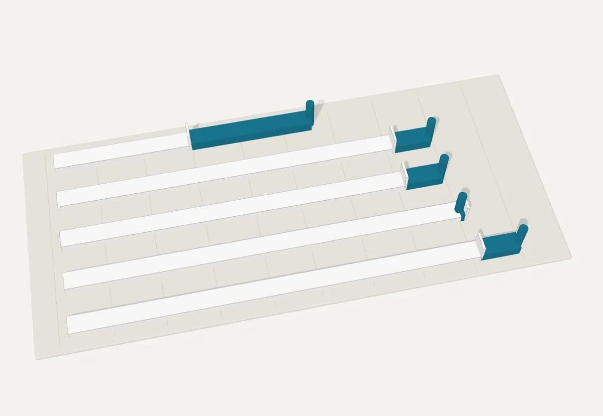

Piloter une collecte avec l’UNICEF
Chef de projet d’une équipe de cinq : Gantt tenu chaque semaine, tableau de communication, lien avec les tuteurs. 258 € collectés, 86 % de l’objectif.
La trace, AC11.02Caner Alpyürük, alternant acheteur à l’Hôpital Nord Franche-Comté
BUT GACO MCMO · BC1 · Gérer un projet · Tronc commun GACO
Cadrer, planifier, coordonner, puis recaler quand le projet dérive.
Travaillé jusqu’au niveau 3, en BUT 3 : Piloter un projet

Ce domaine couvre la conduite d’un projet du cadrage à la clôture : objectifs, planning, budget, risques, répartition des rôles, communication avec les parties prenantes et retour d’expérience.
Un marché public est un projet à part entière : un besoin à faire converger entre plusieurs services, un calendrier contraint par la procédure et des validations qui conditionnent la suite.
Énoncé du programme : Gérer un projet interne ou externe à l’organisation
Chaque niveau a sa page : les apprentissages critiques dans les termes du programme, la situation où je les ai travaillés, mes traces et mon bilan. Les niveaux sont ceux travaillés, aucun résultat d’évaluation n’est publié.
Situation : Soutenons la Libye
Situations : Stage achats à l’HNFC, NORMAL CTM Corporation, CAP Alpes Provence
Situations : Alternance à l’HNFC, Refonte du site du GHT, Démarche qualité PERFORMANCE+
Quatre réalisations qui montrent ce domaine en pratique, chacune reliée à sa trace.
Chef de projet d’une équipe de cinq : Gantt tenu chaque semaine, tableau de communication, lien avec les tuteurs. 258 € collectés, 86 % de l’objectif.
La trace, AC11.02Faire converger le service communication et la DSI sur un même besoin, avec les retours du GH70 et du CHU de Dijon, jusqu’au COPIL du 19 mars 2026.
La trace, AC31.03Le CCTP attendu fin décembre n’a été stabilisé qu’en mars : Gantt recalé, avis parti le 29 mai et publié le 1er juin 2026.
La trace, AC31.06Un benchmark de six références et un coût décomposé par poste, du cadrage à la maintenance, en trois hypothèses.
La trace, AC31.04Chaque jalon part de sa date prévue puis glisse vers sa date réelle, d’après le planning présenté dans ma soutenance.
| Jalon | Prévu | Réel |
|---|---|---|
| Contenu technique validé en COPIL | fin décembre 2025 | 19 mars 2026 |
| Envoi de l’avis de marché | 5 mai 2026 | 29 mai 2026 |
| Mise en ligne de la consultation | 5 mai 2026 | 29 mai 2026 |
| Publication de l’avis | 4 juin 2026 | 1er juin 2026 |
| Remise des offres | 5 juin 2026 | 29 juin 2026 |
Les expériences où ce domaine a été travaillé en situation réelle, puis les études de cas qui le démontrent.
BUT 3 · Individuel, en alternance
Réunir sur un seul site l’hôpital, le centre de soins de longue durée, l’institut de formation et le centre d’enseignement des soins d’urgence, en conciliant la communication, la DSI et la commande publique.
BUT 1 · Équipe de cinq, chef de projet
Cinq étudiants, en partenariat avec l’UNICEF Champagne-Ardenne, pour collecter des dons au profit des enfants touchés par les inondations en Libye.
BUT 2 · À quatre
Des formations courtes en ligne et du coaching pour gagner en confiance en soi, du persona au plan de financement.
Explorer les autres domaines
Achats, vente et relation clientPilotage et performanceMarketing et internationalOmnicanal et digital